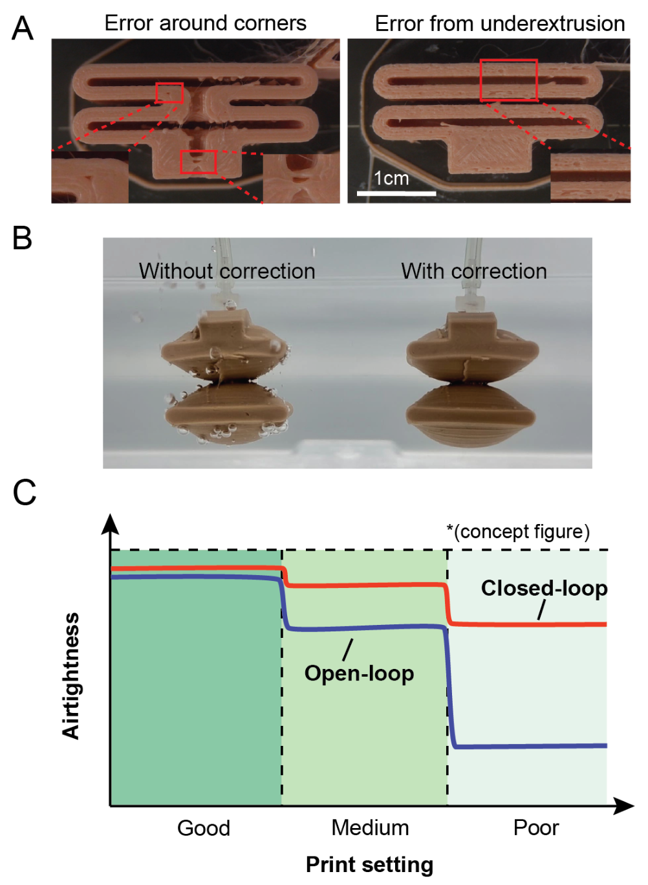

Vision-Based FDM Printing
Closed-Loop, Camera-Guided System for Airtight Soft Actuators

We introduce a low-cost, closed-loop FDM printing system that uses layer-wise vision feedback to detect and correct under-extrusion defects, enabling more reliable fabrication of airtight soft pneumatic actuators and reducing the reliance on manual tuning. Our method combines G-code preprocessing, contour-projected image segmentation, and whole-layer ironing to seal holes and gaps as they appear during printing. In experiments using three print settings, the system reduced leak rates by 75.5%, 82.4%, and 97.5% compared to open-loop printing. These results show that automated correction substantially improves airtightness even with sub-optimal parameters, though it increases print time and does not address geometric accuracy. My contribution included implementing the defect-detection pipeline, designing the correction strategy, and performing the leak-rate experiments.